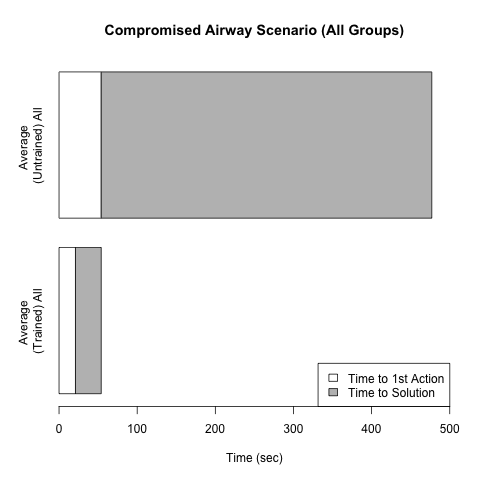

To compare and contrast the underlying perceptions of trained and untrained individuals, both groups were asked a series of 5 questions prior to the simulation. The first question ”What is the number one cause of death in the US population ages 1-44” was correctly identified as trauma by 85% of the trained groups, as opposed to 15% of the untrained groups.
| Group | Cardiac Arrest | Trauma | Cancer | Medication OD | |
| 1 | Nursing Grad | 1 | 3 | ||
| 2 | Nursing Undergrad | 4 | |||
| 3 | Teacher - Trained | 5 | |||
| 4 | Teachers - Untrained | 3 | |||
| 5 | City - Trained | 5 | 1 | ||
| 6 | City - Untrained | 2 | 3 | ||
| 7 | Security - Trained | 1 | 2 | ||
| 8 | Security - Untrained | 4 | 1 | 1 | |
| 9 | Students - Trained | 5 | 1 | ||
| 10 | Students - Untrained | 3 | 1 | 1 | |
| 11 | OCFA | 4 | |||
Both groups were then asked for the standard response time for medical personnel when 911 is dialed. The correct answer of 8-11 minutes was identified by only 35% of the trained groups and 11% of the untrained groups.
| Group | 2-4 min | 5-7 min | 8-11 min | 12-15 min | |
| 1 | Nursing Grad | 3 | 1 | ||
| 2 | Nursing Undergrad | 3 | 1 | ||
| 3 | Teacher - Trained | 1 | 5 | ||
| 4 | Teachers - Untrained | 3 | |||
| 5 | City - Trained | 1 | 4 | ||
| 6 | City - Untrained | 1 | 4 | ||
| 7 | Security - Trained | 1 | 2 | ||
| 8 | Security - Untrained | 4 | 1 | 1 | |
| 9 | Students - Trained | 4 | 2 | ||
| 10 | Students - Untrained | 2 | 2 | 1 | |
| 11 | OCFA | 1 | 3 | ||
The primary concern following a disaster or emergency situaiton was nearly unanimous (86%) identified as safety, with no individuals answering treating victims.
| Group | Cardiac Arrest | Trauma | Cancer | Medication OD | |
| 1 | Nursing Grad | 1 | 3 | ||
| 2 | Nursing Undergrad | 4 | |||
| 3 | Teacher - Trained | 5 | |||
| 4 | Teachers - Untrained | 3 | |||
| 5 | City - Trained | 5 | 1 | ||
| 6 | City - Untrained | 2 | 3 | ||
| 7 | Security - Trained | 1 | 2 | ||
| 8 | Security - Untrained | 4 | 1 | 1 | |
| 9 | Students - Trained | 5 | 1 | ||
| 10 | Students - Untrained | 3 | 1 | 1 | |
| 11 | OCFA | 4 | |||
Nearly all (88%) correctly identified not removing the tourniquet to a victim in distress from the tourniquet itself.
| Group | Loosen the TQ | Remove the TQ | Reassure them | Tourniquets are an | |
| outdated means for | |||||
| hemorrhage control | |||||
| 1 | Nursing Grad | 2 | 2 | ||
| 2 | Nursing Undergrad | 4 | |||
| 3 | Teacher - Trained | 5 | |||
| 4 | Teachers - Untrained | 3 | |||
| 5 | City - Trained | 6 | |||
| 6 | City - Untrained | 5 | |||
| 7 | Security - Trained | 3 | |||
| 8 | Security - Untrained | 6 | |||
| 9 | Students - Trained | 6 | |||
| 10 | Students - Untrained | 1 | 3 | 1 | |
| 11 | FIRE/EMS | 1 | 1 | 2 | |
Finally, for reasons to not render aid in an emergency situation, both groups were split across 3
answers: not knowing what to do, unsure if their assistance would make them worse, and their concern for
disease. Only 2 test subjects identified litigation as a reason to not render aid in an emergency.
| Group | Not knowing | Unsure if | Afraid of | Disease | |
| what to do | make them worse | litigation | concern | ||
| 1 | Nursing Grad | 2 | 1 | 1 | |
| 2 | Nursing Undergrad | 2 | 1 | 1 | |
| 3 | Teacher - Trained | 1 | 1 | 3 | |
| 4 | Teachers - Untrained | 2 | 1 | ||
| 5 | City - Trained | 1 | 4 | ||
| 6 | City - Untrained | 3 | 2 | ||
| 7 | Security - Trained | 2 | 1 | ||
| 8 | Security - Untrained | 2 | 2 | 2 | |
| 9 | Students - Trained | 4 | 2 | ||
| 10 | Students - Untrained | 3 | 1 | 1 | |
| 11 | FIRE/EMS | ||||
in the disaster simulation, the subjects were timed and their 1st actions were recorded. When treating the arterial bleeding victim, the appropriate action is to hold pressure on the wound and/or apply a tourniquet to the effected extremity. In regards to treating this victim, the training group had a significantly lower time than the untrained group when responding and preventing death from exsanguination (which was designated at 8 minutes) (p-value = 0.001446, CI = (-∞,-204.416)). trained groups had an average time to solution in 3 minutes and 33 seconds, while the untrained groups were never able to come to a solution before the time expired and death from exsanguination occurred. The average time to solution of the trained groups was similar to that of the EMS workers, who had an average time to solution in 2 minutes and 38 seconds.
| Subject | Time to 1st Action | Tourniquet Applied | Time to Solution | |
| 1 | 1 Nursing Grad | 1m 15s | No | 8m |
| 2 | Nursing Undergrad | 1m | No | 8m |
| 3 | Teacher - Trained | 4s | Yes | 2m 24s |
| 4 | Teachers - Untrained | 2m 50s | No | 8m |
| 5 | City - Trained | 1m | Yes | 2m 55s |
| 6 | City - Untrained | 4m 55s | No | 8m |
| 7 | Security - Untrained | 30s | Yes | 8m |
| 8 | Security - Trained | 45s | Yes | 4m 47s |
| 9 | Students - Trained | 30s | Yes | 3m 27s |
| 10 | Students - Untrained | 37s | Yes | 8m |
| 11 | EMS baseline | 48s | Yes | 2m 38s |
Notes: Most groups performance improved once Traumedix kit was identified. Majority of groups did not continue to chest evaluation after addressing hemorrhage. All trained groups applied direct pressure until able to place tourniquet. Untrained groups derive comfort from remaining in their group.
when treating the unconscious victim the proper maneuver is to place the victim on his side in the rescue position to prevent airway aspiration or obstruction. Once again the trained group saw a significantly different time to resolution than that of the untrained group. (p-value = 0.008729, CI = (-∞,-191.5561)). Trained groups had an average time to solution in 32.6 seconds, while untrained groups had an average time to solution in 7 minutes and 3 seconds. Only one untrained group was able to come to a solution before time expired (security officers) Once again the trained groups average time to solution closely mimicked that of trained EMS workers who had an average time to solution of 1 minute and 21 seconds.
| Subject | Time to 1st Action | Time to Solution | Time to Reassess | |
| 1 | Nursing Grad | 1m 27s | 8m | 8m |
| 2 | Nursing Undergrad | 1m 3s | 7m 36s | 7m 36s |
| 3 | Teacher - Trained | 11s | 11s | 2m 24s |
| 4 | Teachers - Untrained | 1m | 8m | 8m |
| 5 | City - Trained | 38s | 38s | 3m 38s |
| 6 | City - Untrained | 32s | 8m | 1m 38s |
| 7 | Security - Trained | 18s | 18s | 2m 42s |
| 8 | Security - Untrained | 18s | 2m 40s | 1m 58s |
| 9 | Students - Trained | 15s | 15s | 2m 26s |
| 10 | Students - Untrained | 1m 2s | 8m | 3m 22s |
| 11 | OCFA | 25s | 1m 21s | 1m 21s |
